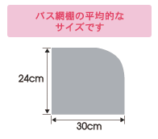
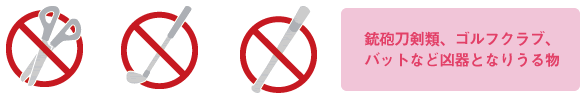
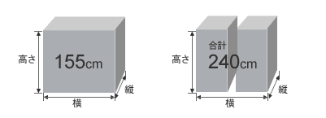

■車内に持ち込むことができる手荷物は、1個となります。
■大きさは、バス網棚に入るもの、または各自の座席で管理できる程度のものとなります。
（※座席足元は暖房設備により高温になる場所もありますのでご注意ください。）
■バス収納スペースの関係から車内で適切に管理できないと判断される手荷物に関しては、バス乗務員、チェックイン係員にてトランクでお預かりさせていただくようお願いする場合もございますのでご了承ください。
| 刃物類 | 刃物類やその他凶器となりうる物の車内への持ち込みは安全確保のためにお断りしトランクにてお預かりします。 |
|---|---|
| 危険物 | 法令により車内への持ち込み、及びトランクでのお預かりができない危険物、薬品がございますのでご注意ください。 ＜法令で定められているお預かりできない危険物、薬品類＞ 火薬（100gを超える花火を含みます）、ガソリン、灯油、軽由、アルコール類、その他引火性液体、爆発性物質、腐食性物質など。 |
| ペット | ペットは車内への持ち込み、及びトランクでのお預かりもできませんのであらかじめご了承ください。 |
特に注意が必要なバス車内に持ち込めない物。（バストランクにお預けください）

■スーツケースなどバス車内で利用しないお手荷物はトランクにお預けください。
■取り間違いのないようご自身で目印となるもの、ネームタグなどをご利用になることをお勧めします。
■お預かりできる手荷物はおひとり様2個までとなっております。3個以上はお預かりできませんのでご了承ください。
荷物1個の場合 縦の長さ＋横の長さ＋高さの長さ＝155ｃｍ以内の手荷物
荷物2個の場合 縦の長さ＋横の長さ＋高さの長さ＝合計240ｃｍ以内の手荷物

| こわれやすい物 | バストランク内は激しい揺れ、振動があり、また温度調節をする機能はありませんので、振動、熱などで破損する恐れのある手荷物はお預かりできません。 |
|---|---|
| 貴重品 | 現金、貴金属、宝石類、有価証券、美術骨董品、楽器類などの貴重品はお預けの手荷物の中には入れないでください。 |
| スポーツ用品 | スキー、スノーボード、ゴルフバッグについては、規定の大きさを超えてもお預かりできます。 ※バストランクでお預かりできる大きさを超える他のスポーツ用品に関しては、大きさ（縦、横、高さ）を計測の上予約センター（050-3537-5678）までお問合せください。 |
| 自転車等 | 輪行袋にいれたものに限りお預かりいたします。 ※積込み可能数に制限があります。予約後に予約センター（050-3537-5678）に台数・サイズをご連絡ください。予約のない場合乗車時にお断りさせて頂く場合がございますのでご了承ください。その場合ご乗車されない場合返金対応はできませんのでご注意ください。 |